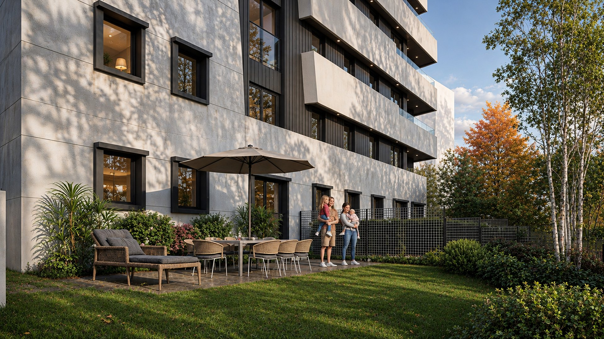

Amura
Santander, CantabriaA set of exterior images and a video to present Amura, a new residential building in Santander: the building in its street, the entrance and garden, and the terrace at the top.
Warm late-afternoon light rakes across the pale panels and the dark ribbed cladding, so the angled balconies cast long, clean shadows. The views move from the whole volume to details at street level — entrance, garden, terrace — and end on the rooftop, where the sea opens up. The video carries the same light into motion.
(Animation)Watch with sound on YouTube ↗

(Exteriors)

Have a project in mind?
Let’s talk →